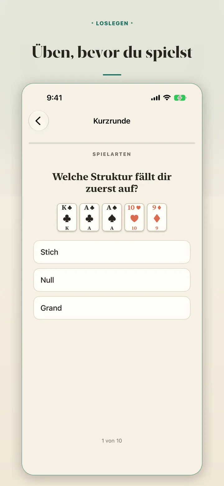
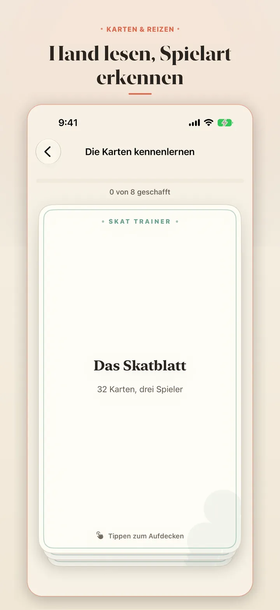
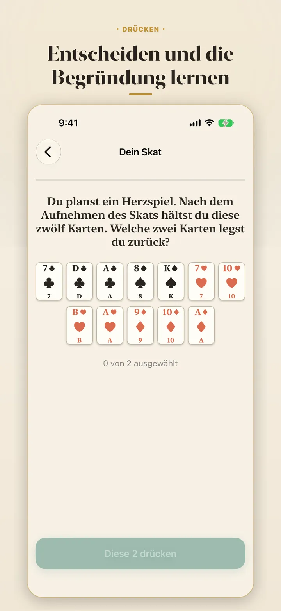
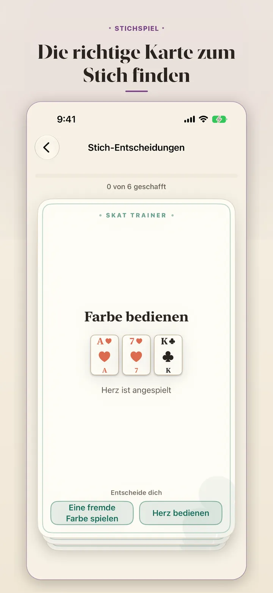
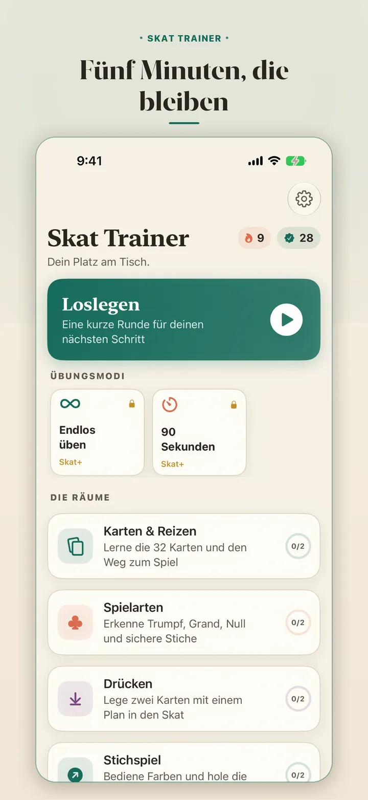
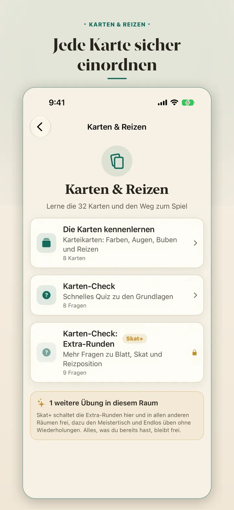

Skat lernen mit der App für iPhone und iPad: Karten lesen, reizen, drücken und Stiche spielen, in kurzen Übungen. Ohne Gegner und ohne Konto.
iPhone · Vier Übungsräume · Offline nutzbar
Kostenlos laden





Die Grundlagen sind kostenlos. Skat+ bringt mehr Übungen dazu.
Kartenwerte, Farben, Reizen und Spielaufbau, dazu die Regeln, die neuen Spielern am häufigsten im Weg stehen.
Trumpf, Grand, Null und die Kartenfolge, die aus einer Hand einen guten Spielplan macht.
Fünf Karten sehen und die Spielart erkennen, bevor du dich festlegst.
Zwölf Karten ordnen, zwei Karten auswählen und die Entscheidung mit der Erklärung des Trainers vergleichen.
Trumpf bedienen, Stiche planen, Ausspiel lesen und wichtige Karten im richtigen Moment spielen.
Wischkarten, die eine Regel erklären, statt nur die Antwort zu prüfen.
Ein zusätzlicher Übungssatz in allen vier Räumen, mit neuen Fragen, Händen und Entscheidungen.
Anspruchsvolle Drück-Strategie, Verteidigung, Endspiel und Übungen für erfahrene Spieler.
Lernserien, Fehlerwiederholung und Raumfortschritt halten die wichtigen Fähigkeiten bereit.
Skat Trainer: Learn Skat speichert Fortschritt und Einstellungen auf deinem iPhone. Es gibt keine Anmeldung, keine Werbung und keinen Verkauf deiner Daten. Erinnerungen werden lokal auf deinem Gerät geplant. Apple verarbeitet Käufe, RevenueCat erhält nur die nötigen Kennungen für Skat+.
Datenschutz →Wie die App funktioniert.
Viele lernen Skat am Tisch und haben bis zur nächsten Runde kaum Gelegenheit zum Üben. Kartenwerte werden unsicher, Drückkarten zur Bauchentscheidung und Stiche hektisch.
Skat Trainer: Learn Skat bringt diese Wiederholungen ohne Tisch. Karten lesen, Spielart wählen, zwei Karten drücken und Stiche planen, überall und in wenigen Minuten.
Alle vier Räume sind kostenlos. Skat+ ergänzt mehr: monatlich oder jährlich, jeweils mit einer Woche kostenloser Probe, oder einmalig dauerhaft. Die Preise werden vor dem Kauf in der App angezeigt und unterscheiden sich je nach Region.
Zusatzübungen. Ein zweiter Satz Fragen, Hände und Entscheidungen in jedem Raum.
Der Meistertisch. Anspruchsvolle Drück-Strategie, Verteidigung, Endspiel und Expertenwissen.
| Plattform | iOS 17+ |
| Sprache | Swift 6 with strict concurrency |
| Frameworks | SwiftUI · StoreKit 2 · RevenueCat |
| Daten | Kein Konto, Fortschritt auf dem Gerät |
| Speicher | Lokale Einstellungen, Übungen in der App |
| Offline | Jede Übung funktioniert ohne Netzwerk |
Eine Regel nach der anderen. Übungen trennen Kartenwerte, Spielarten, Drücken, Bedienpflicht und Stellung am Tisch.
Eigene Lehrbeispiele. Jede Hand und jede Frage ist für das Lernen geschrieben, nicht aus einem veröffentlichten Spiel kopiert.
Kurze Einheiten. Eine Übung passt in eine freie Minute und bleibt trotzdem konkret.
Was kostenlos ist. Die vier Räume sind ohne Zahlung vollständig. Skat+ ergänzt Umfang und anspruchsvollere Inhalte.
Ja. Skat Trainer ist eine kostenlose Skat-Lern-App für iPhone und iPad. Sie übt Karten, Reizen, Spielarten, Drücken und Stichspiel in kurzen Einheiten, und jede Antwort zeigt die Begründung.
Beginne mit dem 32-Karten-Blatt und den Kartenwerten, dann kommen Reizen, die Spielarten, das Drücken und das Stichspiel. Skat Trainer folgt genau dieser Reihenfolge in vier Übungsräumen.
Beim Reizen wird festgelegt, wer Alleinspieler wird. Der Alleinspieler nimmt den Skat auf, drückt zwei Karten und sagt dann die Spielart an. Im Raum Karten & Reizen übst du das mit Fragen und Erklärungen.
Drücken heißt, nach dem Aufnehmen des Skats zwei Karten wieder abzulegen. Im Raum Drücken siehst du zwölf Karten, wählst zwei aus und vergleichst deine Entscheidung mit der Erklärung des Trainers.
Die App übt Trumpf, Grand und Null. Du lernst, aus fünf Karten die passende Spielart zu erkennen, bevor du dich festlegst.
Der Download ist kostenlos, vier Übungsräume und die Lernkarten sind enthalten, und es gibt kein Konto und keine Anmeldung. Das optionale Skat+ bringt zusätzliche Übungen und den Meistertisch, die Preise zeigt die App vor dem Kauf an.
Nein, es gibt keine Gegner. Skat Trainer ist eine Übungs-App für die Zeit zwischen den Runden, und alle Übungen funktionieren ohne Netz.
Skat Trainer: Learn Skat ist eine unabhängige Skat-Lernapp. Hausregeln können abweichen, deshalb gilt am Tisch die gemeinsam vereinbarte Regel.
Kostenlos im App Store. Vier Übungsräume, kein Konto. Skat+ optional.
Kostenlos laden